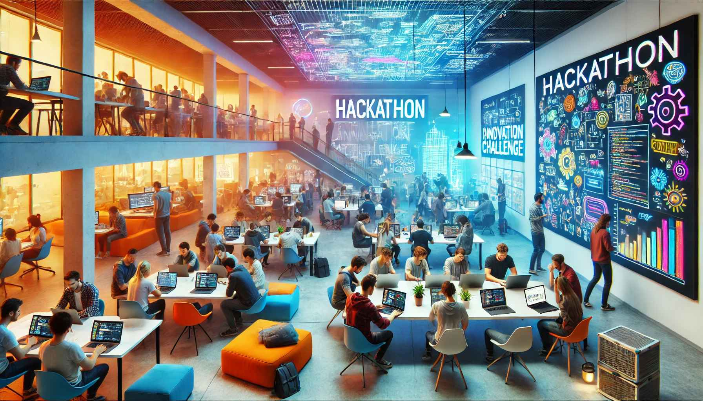
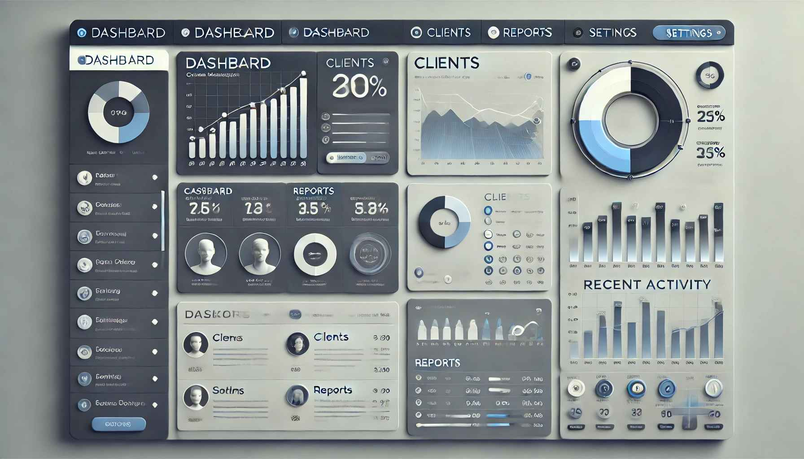
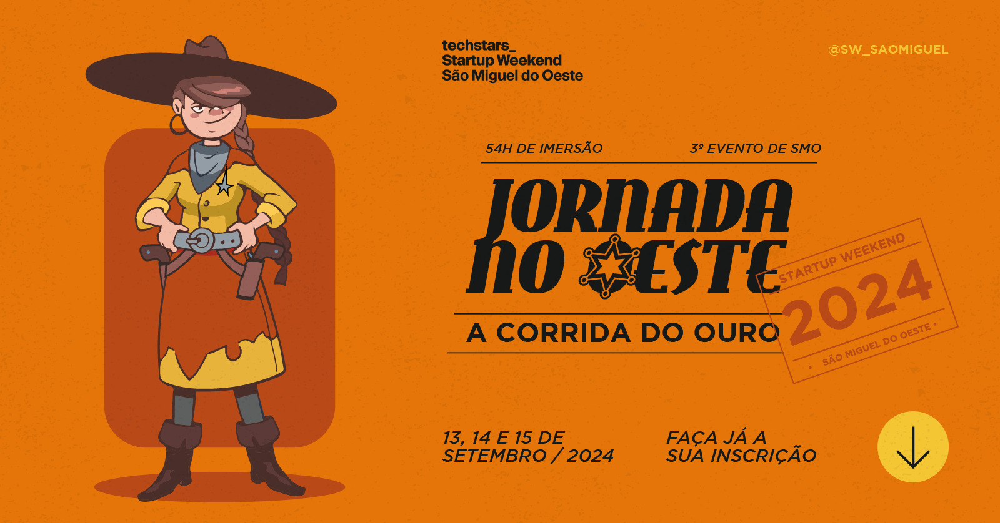
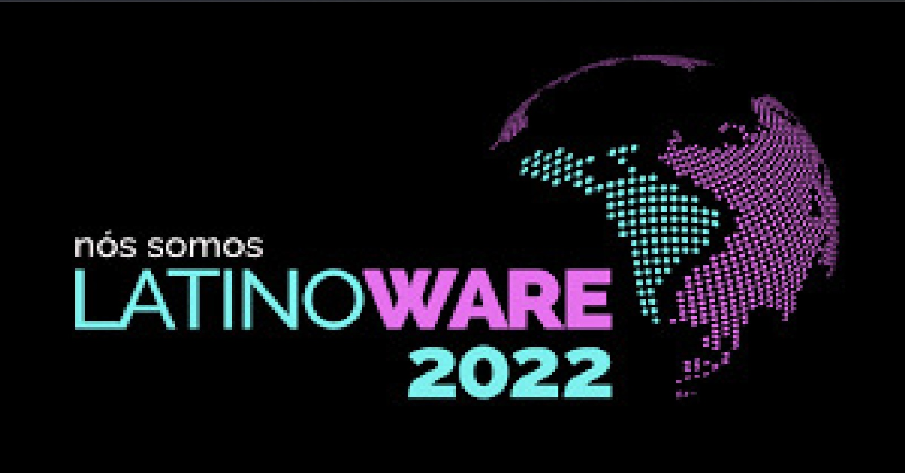

Full stack
NestJS, Node.js, TypeScript e Python no backend; HTML, CSS e JavaScript na interface. APIs REST, autenticação e integrações.
> ROOT ACCESS GRANTED.
> INITIATING SECURITY AUDIT...
> VULNERABILITY FOUND IN SECTOR 7G.
> REDIRECTING TO SECRET PROTOCOL...
Desenvolvedor full stack & analista de suporte técnico
Desenvolvo aplicações do backend à interface com PostgreSQL, APIs e IA, e conheço o outro lado do balcão: PDV, impressoras, máquinas de cartão, redes e atendimento.
Quem está por trás do terminal.

Comecei escrevendo scripts .bat no computador da escola, passei por mods e servidores de Minecraft e fui parar no desenvolvimento web. Quase tudo aprendi sozinho, movido por curiosidade de entender como as coisas funcionam por dentro.
Hoje desenvolvo aplicações do backend à interface, com foco em PostgreSQL (Row Level Security, multitenancy, PgBouncer), APIs em NestJS e IA aplicada a problemas reais, como lançar uma despesa a partir da foto de uma nota.
Antes do código, trabalhei com suporte: instalação de PDVs, impressoras e máquinas de cartão, emissão de NFC-e/NF-e, redes e manutenção de hardware. Isso me deixou com um olho no usuário final em tudo que construo.
O que eu uso no dia a dia.
NestJS, Node.js, TypeScript e Python no backend; HTML, CSS e JavaScript na interface. APIs REST, autenticação e integrações.
Modelagem, Row Level Security, sistemas multiempresa (multitenancy) e pool de conexões com PgBouncer.
Extração de dados de notas, PDFs e fotos, LLMs rodando localmente e agentes que fazem a triagem de chamados de suporte.
Pentest e revisão de segurança das minhas próprias aplicações. Kali Linux, HackTheBox e TryHackMe.
Servidores Linux e VPS, deploy com PM2, configuração de redes, câmeras IP e monitoramento de servidores.
PDV, impressoras e máquinas de cartão, NFC-e/NF-e, montagem e manutenção de computadores e atendimento ao cliente.
Sistemas que construí ou estou construindo.
Gestão rural com IA: lança despesas a partir da foto de uma nota ou de uma anotação de caderno, sempre com conferência humana antes de salvar. Multiempresa, rebanho, lavouras, leite e CRM rural.

Alerta que avisa o profissional, na hora do pedido, que o exame do paciente já existe. Ideia, pesquisa com 48 pessoas, MVP e pitch feitos em 3 dias.
Sistema de gestão rural entregue a um cliente: rebanho, lavoura e leitura de documentos com IA. Eu mantenho a API, o front e o servidor.
Central de chamados para uma instituição: protocolo próprio, inventário de rede com tipos INET/MACADDR do PostgreSQL e zero dependência de serviços externos.

Site institucional pensado para o celular, para o cliente encontrar o restaurante e fazer o pedido rápido.

Plataforma com regras de negócio complexas e integrações de validação de dados.
Evolução de módulos full stack com foco em experiência do usuário e manutenção do código.
Do suporte técnico ao desenvolvimento.
Desenvolvo sistemas SaaS para o agro e o varejo, com PostgreSQL multiempresa e IA aplicada à rotina de quem usa.
Redes e servidores Linux, câmeras IP, montagem e manutenção de computadores e impressoras, e desenvolvimento de sistemas internos.
Suporte a sistemas de PDV para supermercados: instalação de caixas, impressoras e máquinas de cartão, correção e emissão de NFC-e/NF-e e atendimento.
Scripts .bat, mods e servidores de Minecraft, depois sites e segurança. A curiosidade virou profissão.


O que eu faço quando não estou no backend.
Modelos 3D rodando direto na página com Three.js e WebGL, como o fundo deste site.
o modelo carrega quando você chegar aqui
arraste para girar
Edito vídeo cortando no ritmo da trilha e monto as peças gráficas que vão junto.